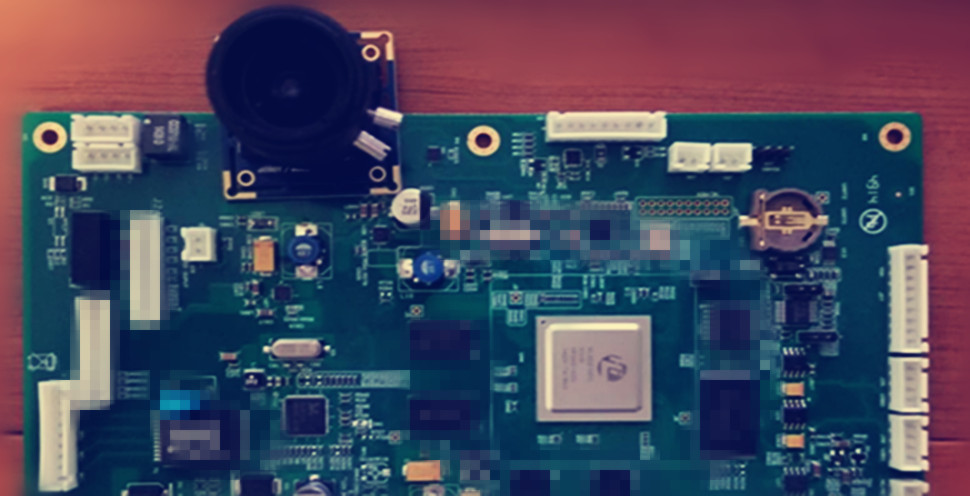

<div id="single-portfolio">
	<div id="portfolio-details" class="container">
		<a class="close-folio-item" href="#"><i class="fa fa-times"></i></a>
		
		<div class="row">
			<div class="col-sm-9">
				<div class="project-info">
					<h3>视频会议系统</h3>
					<p>这是一款基于海思的多路输入输出IC 开发的视频会议系统板卡，能支持4路输入，4路输出</p>
					<p>基于海思的sdk进行的2次开发，可用于视频会，监控设备，能同时支持2路1080p或者4路720p视频，摄像头能支持到1080P，60帧录像</p>
				</div>
			</div>
			<div class="col-sm-3">
				<div class="project-details">
					<h3>项目简介</h3>
					<p><span>客户: </span>上海某公司</p>
					<p><span>时间:</span> 2016年9月</p>
					<p><span>需求:</span> 硬件原理图设计, layout设计, PCBA打样，嵌入式软件开发，视频压缩算法</p>
				</div>  
			</div>
		</div>
	</div>
</div>